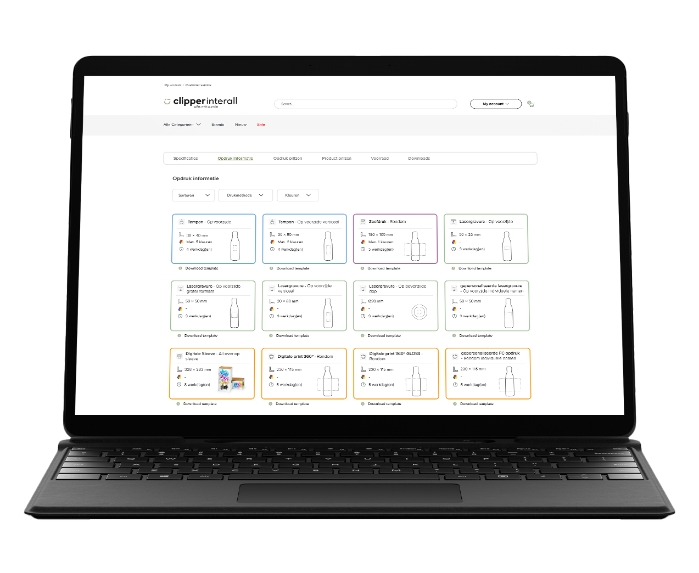
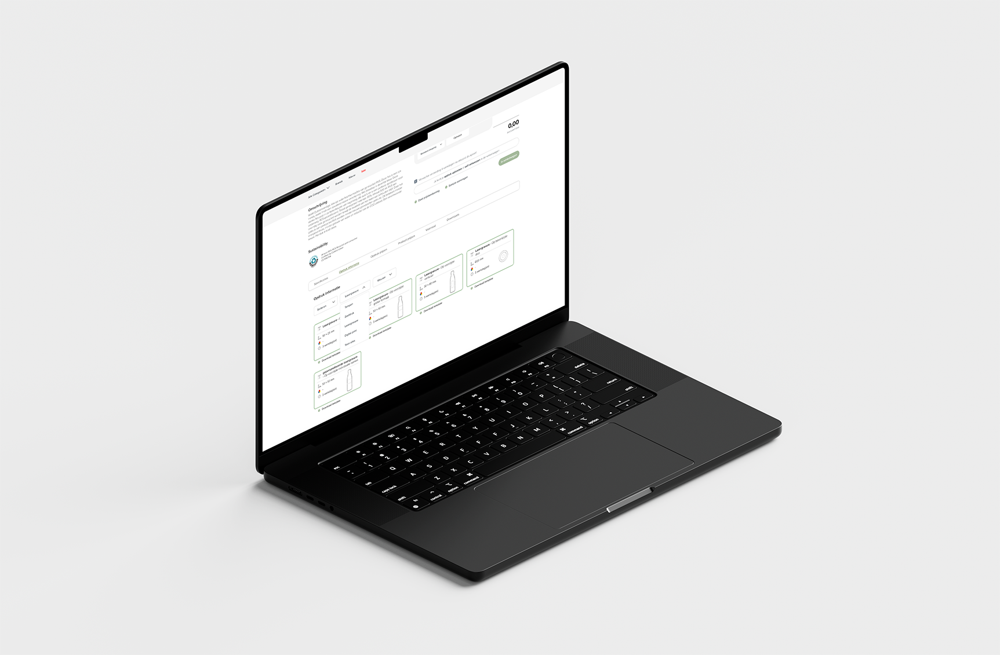
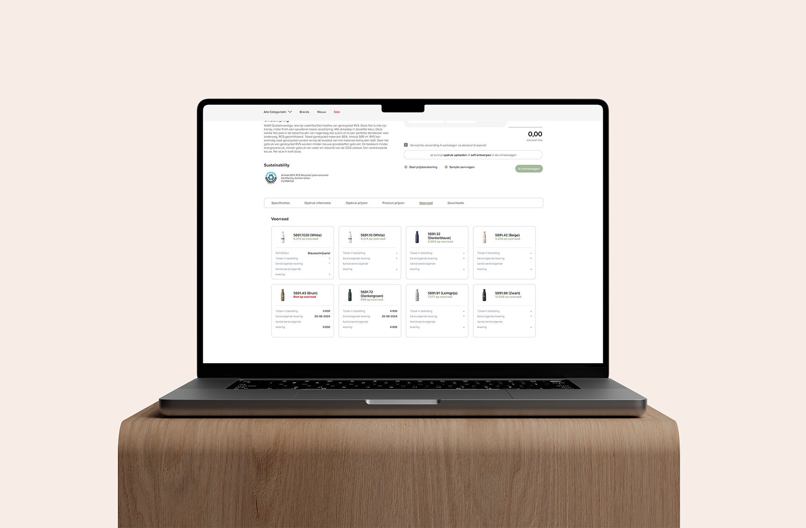

PDP informatiebalk
Onderzoek, wireframing en design - 2024

Onderzoek, wireframing en design - 2024

De productpagina (PDP) op de Clipper Interall website, heeft
onderaan een informatiebalk. In deze informatiebalk staat alle
informatie genoteerd over een product die een klant nodig heeft om
dat product te bedrukken en te bestellen. Denk hierbij aan:
specificaties, opdruk informatie, opdruk prijzen, voorraad, etc.
De informatiebalk heeft al een lange tijd geen update
gehad. Zo is de informatie rommelig en de opmaak daarvan oubollig.
Dit spoort de gebruiker niet aan om de informatiebalk te gaan
gebruiken. Het doel van dit project is om klanten een duidelijker
overzicht te geven met alle informatie over een product en de
informatiebalk interactiever te maken, zodat de klant de balk vaker
gaat gebruiken om informatie op te halen.

De wens was er om de informatiebalk interactiever te maken voor de
klant. Dit wordt gedaan door bepaalde informatie in de balk klikbaar
te maken. Denk hierbij aan een filter of de mogelijkheid om een
opdruk techniek aan te klikken en dit te laten communiceren met het
bestelsysteem op de productpagina. Zodat de klant de gekozen opdruk
niet meer stap voor stap hoeft te selecteren.
Daarnaast, als we het over visuele aanpassingen gaat, kwam
naar voren dat het gebruik van iconen en kleuren belangrijk is om
aandacht te trekken van de klant. In dezelfde lijn is het laten zien
van afbeeldingen van een product ook belangrijk. Zoals de kleuren
van een product laten zien bij de voorraad en het product tonen bij
de opdruk informatie met de locatie en het opdruk vlak.

Allereerst zijn er schetsen en wireframes gemaakt voor een nieuwe
informatiebalk om te bepalen waar informatie komt te staan en hoe de
klant moet navigeren binnen de informatiebalk. Deze schetsen en
wireframes zijn besproken met onze brandmanager en e-commerce
manager en na het OK van beide managers, kon het ontwerpen van de
nieuwe informatiebalk beginnen.
Er zijn meerdere ontwerp rondes geweest om het definitieve
ontwerp te bereiken. Elke ronde is aan de belanghebbenden en de
doelgroep gepresenteerd, en bij feedback hebben we gebrainstormd
over een passende oplossing. Eenmaal een definitief ontwerp en het
implementeren van het nieuwe ontwerp kon beginnen bij de IT
afdeling. Ook bij deze fase is er veel contact geweest met de
in-house front-end developer.


PREV